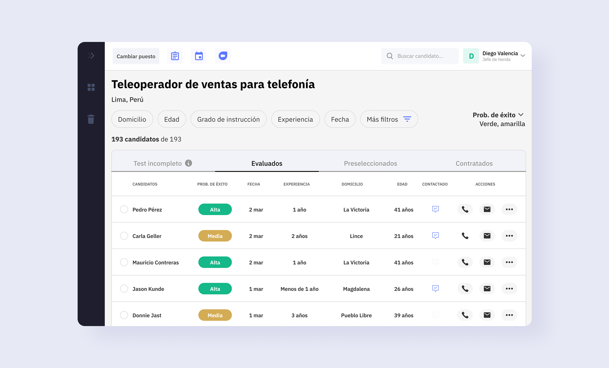
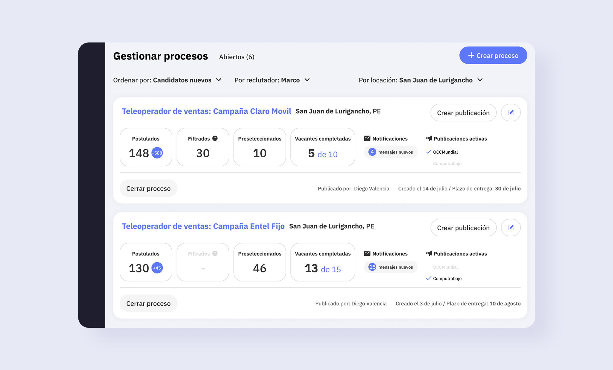

§ tl;dr
Quantum Talent's platform had a damning usage pattern: 65% of recruiters logged in only to hit “Export” and leave. I led the research and redesign that turned it from a data dump into a working tool, rebuilding it around candidate filtering and a hiring forecast recruiters didn't have before. Validated with usability testing (10 of 12 recruiters completed every task) and shipped as the V1 that migrated users off the old MVP.
01 context
Quantum Talent sells an AI-powered recruiting SaaS: candidates take a ~20 minute test on their phones, an algorithm predicts their probability of success, and HR teams get the results in a dashboard. But the platform had started life as an engineering built MVP, and it showed. It had features for grouping candidates by pipeline stage and messaging them, and recruiters ignored all of them.
02 the interesting decision
Treat the “Export” button as the most important signal in the product
The most used feature on the entire platform was Export: 65% of recruiters logged in purely to pull an Excel file and immediately left. It would have been easy to read that as a feature adoption problem and push notifications or onboarding at it. We read it as a confession, the real work was happening outside our product, in spreadsheets. The question wasn't “how do we get them to use our features,” it was “what are they doing in that Excel file that we're failing to support?”
So we went to find out. We interviewed 14 recruiters across Mexico, Peru, and Colombia, spanning banking, retail, customer service, and back office hiring, and mapped their actual journey. The friction clustered hard in one place: 30% of all pain points across the entire journey were about filtering candidates, recruiters were merging multiple data sources into one spreadsheet by hand just to decide who to talk to.
Underneath that was a deeper, more emotional problem, surfaced in interviews: recruiters had no visibility into how many candidates they'd need to source to actually fill a role in time. The pool shrank with every filter, and they only realized they were short far too late, leaving them exposed to blame when targets were missed. That reframed the brief from “build a better filter” to “help recruiters anticipate whether they'll hit their goal.”
03 what shipped
Two features that embody the insight
We ran a competitive benchmark of leading ATS platforms, then used surveys and a card sorting exercise to establish what recruiters actually needed to filter by, landing on a clear hierarchy led by the AI success prediction, then experience, availability, location, and salary expectations.

Structured filtering, built on a validated hierarchy
The redesign replaced manual spreadsheet, merging with structured candidate filtering, ordered by the hierarchy recruiters told us mattered: AI success prediction first, then experience, availability, location, and salary expectations.

A forecast recruiters never had
The new hiring forecast gave recruiters early visibility into how many applicants they'd need to fill a role in time, turning the late, blame exposed surprise of a shrinking pool into something they could anticipate and plan around.
- Streamlined messaging Contact qualified candidates without adding them one by one the third thing the old platform lacked.
Build note
To ship fast and migrate users off the MVP, V1 was built on an established React component library — a deliberate tradeoff that bought speed while leaving room to develop custom components as the product matured.
04 outcome
We validated the redesign before building: in usability testing with 12 recruiters from top clients, all 12 understood and saw value in the new features, and 10 of 12 completed every task in the prototype. That testing also gave us a prioritized development backlog grounded in real recruiter behavior rather than assumptions. V1 shipped as the migration path from the old MVP to the new structure — the foundation the platform's later iterations were built on.
05 reflection
The lesson that stuck with me: the most used feature in a product is sometimes a symptom, not a success. The Export button was telling us the product had failed to support the recruiter's actual job, and the whole redesign came from taking that signal seriously instead of trying to engineer it away. If I were doing it today, I'd have instrumented the V1 launch with clear adoption and time-to-fill metrics from day one. We validated desirability well, but I'd want the shipped impact numbers to close the loop.